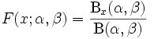

The Beta Distribution can be defined as a family of probability distributions differing in the values of α and β. The Cumulative distribution function is given below.

where Bx(a,ß) is the incomplete beta function and Ix(a,ß) is the regularized incomplete beta function.
Using the Formula
The BetaCumulativeDistribution method of the UtilityFunctions class returns the cumulative beta distribution for x>=0, a >0, b>0.
|
Method Name |
Parameters |
Return Value |
|
BetaCumulativeDistribution |
1. a: The lower limit. 2. b: The upper limit. 3. x: the value for which the distribution has to be calculated. |
A double that represents the cumulative beta distribution. |
Example
Here is a code snippet that shows a sample usage.
|
[C#]
ChartSeries series = this.ChartControl1.Model.NewSeries("a=b=0.5"); for(double i=0;i<=1;i=i+0.1) { // Calculate Beta cumulative function for a points and plot the points in chart control. series.Points.Add(i,Syncfusion.Windows.Forms.Chart.Statistics.UtilityFunctions.BetaCumulativeDistribution(0.5,0.5,i)); } series.Type = ChartSeriesType.Spline; series.Tex = series.Name; this.ChartControl1.Series.Add(series); |
|
[VB.NET]
'Calculate Beta cumulative function for a points and plot the points in chart control. Dim series As ChartSeries = Me.ChartControl1.Model.NewSeries("a=b=0.5") For i As Double = 0 To 1 Step 0.1 series.Points.Add(i,Syncfusion.Windows.Forms.Chart.Statistics.UtilityFunctions.BetaCumulativeDistribution(0.5,0.5,i)) Next i series.Type = ChartSeriesType.Spline series.Text = series.Name Me.ChartControl1.Series.Add(series) |